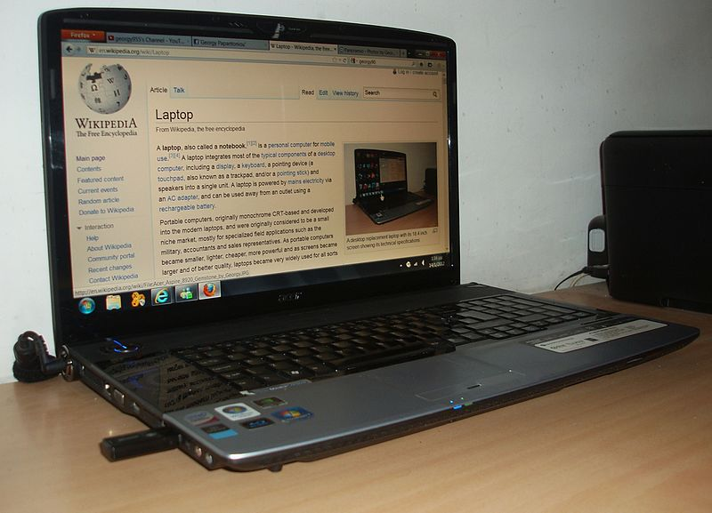
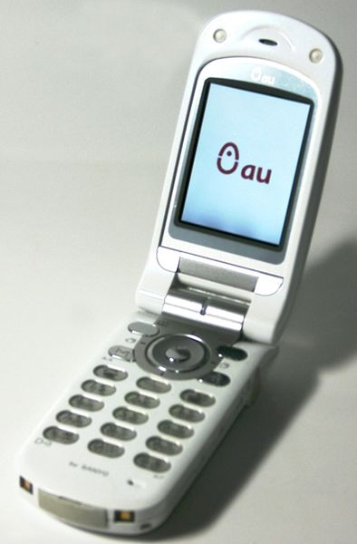

Komputer

Komputer adalah alat yang dipakai untuk mengolah data menurut prosedur yang telah dirumuskan. Kata
computer pada awalnya dipergunakan untuk menggambarkan orang yang perkerjaannya melakukan
perhitungan aritmetika, dengan atau tanpa alat bantu, tetapi arti kata ini kemudian dipindahkan
kepada mesin itu sendiri. Asal mulanya, pengolahan informasi hampir eksklusif berhubungan dengan
masalah aritmetika, tetapi komputer modern dipakai untuk banyak tugas yang tidak berhubungan dengan
matematika.
Dalam arti seperti itu terdapat alat seperti slide rule, jenis kalkulator mekanik mulai dari abakus
dan seterusnya, sampai semua komputer elektronik yang kontemporer. Istilah lebih baik yang cocok
untuk arti luas seperti "komputer" adalah "yang mengolah informasi" atau "sistem pengolah
informasi." Selama bertahun-tahun sudah ada beberapa arti yang berbeda dalam kata "komputer", dan
beberapa kata yang berbeda tersebut sekarang disebut sebagai komputer.
Kata computer secara umum pernah dipergunakan untuk mendefiniskan orang yang melakukan perhitungan
aritmetika, dengan atau tanpa mesin pembantu. Menurut Barnhart Concise Dictionary of Etymology, kata
tersebut digunakan dalam bahasa Inggris pada tahun 1646 sebagai kata untuk "orang yang menghitung"
kemudian menjelang 1897 juga digunakan sebagai "alat hitung mekanis". Selama Perang Dunia II kata
tersebut menunjuk kepada para pekerja wanita Amerika Serikat dan Inggris yang pekerjaannya
menghitung jalan artileri perang dengan mesin hitung.
Charles Babbage mendesain salah satu mesin hitung pertama yang disebut mesin analitikal. Selain itu,
berbagai alat mesin sederhana seperti slide rule juga sudah dapat dikatakan sebagai komputer.
≫ Sumber : Wikipedia
Laptop

Laptop atau komputer jinjing adalah komputer bergerak yang berukuran relatif kecil dan ringan,
beratnya berkisar dari 1–6 kg, tergantung pada ukuran, bahan, dan spesifikasi laptop tersebut.
Sumber daya laptop berasal dari baterai atau adaptor A/C yang dapat digunakan untuk mengisi ulang
baterai dan menyalakan laptop itu sendiri. Baterai laptop pada umumnya dapat bertahan sekitar 2
hingga 6 jam sebelum akhirnya habis, tergantung dari cara pemakaian, spesifikasi, dan ukuran
baterai. Laptop terkadang disebut juga dengan komputer notebook atau notebook saja.
Sebagai komputer pribadi, laptop memiliki fungsi yang sama dengan komputer desktop (desktop
computers) pada umumnya. Komponen yang terdapat di dalamnya sama persis dengan komponen pada
desktop, hanya saja ukurannya diperkecil, dijadikan lebih ringan, lebih tidak panas, dan lebih hemat
daya.
Laptop kebanyakan menggunakan layar LCD (Liquid Crystal Display) berukuran 10 inci hingga 17 inci
tergantung dari ukuran laptop itu sendiri. Selain itu, papan ketik yang terdapat pada laptop juga
kadang-kadang dilengkapi dengan papan sentuh yang berfungsi sebagai "pengganti" tetikus. Papan ketik
dan tetikus tambahan dapat dipasang melalui soket Universal Serial Bus maupun PS/2 jika tersedia.
Berbeda dengan komputer desktop, laptop memiliki komponen pendukung yang didesain secara khusus
untuk mengakomodasi sifat komputer jinjing yang portabel. Sifat utama yang dimiliki oleh komponen
penyusun laptop adalah ukuran yang kecil, hemat konsumsi energi, dan efisien. Komputer jinjing
biasanya harganya lebih mahal, tergantung dari merek dan spesifikasi komponen penyusunnya, walaupun
demikian, harga komputer jinjing pun semakin mendekati desktop seiring dengan semakin tingginya
tingkat permintaan konsumen.
≫ Sumber : Wikipedia
Handphone

Telepon genggam atau telepon seluler (disingkat ponsel) atau handphone (disingkat HP) adalah
perangkat telekomunikasi elektronik yang mempunyai kemampuan dasar yang sama dengan telepon
konvensional saluran tetap, tetapi dapat dibawa ke mana-mana (bahasa Inggris: portable atau mobile)
dan tidak perlu disambungkan dengan jaringan telepon menggunakan kabel (jadi komunikasi nirkabel,
bahasa Inggris: wireless communication). Saat ini, Indonesia mempunyai dua jaringan telepon nirkabel
yaitu sistem GSM (Global System for Mobile Telecommunications) dan sistem CDMA (Code Division
Multiple Access). Badan yang mengatur telekomunikasi seluler Indonesia adalah Asosiasi
Telekomunikasi Seluler Indonesia (ATSI).
≫ Sumber : Wikipedia